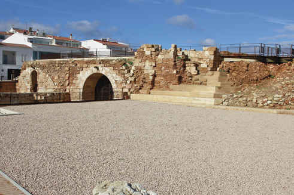
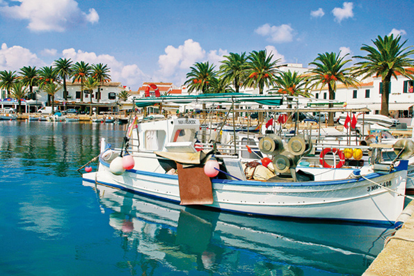
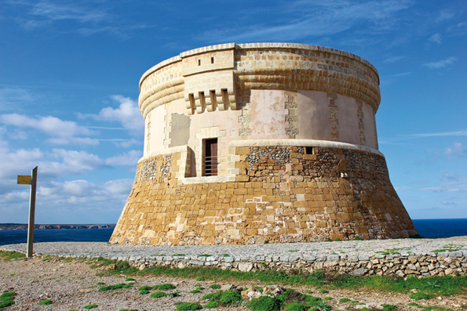

Fornells, mar i gastronomia
Parlar de Fornells és parlar de mar. El seu port ha albergat, des de temps pretèrits, nombroses naus. Els primers documents històrics es remunten a l'any 1300 i relaten l'arribada de vàries embarcacions genoveses. En aquella època, encara no hi havia un nucli poblacional.
A partir del segle XVI, Menorca es fortificà per protegir-se dels atacs enemics. Es construí llavors la fortalesa de Sant Antoni i les gents que treballaven en la seva edificació s'establiren als seus voltants. Posteriorment, s'erigí la capella de Sant Antoni. Fornells anava creixent a poc a poc, i sorgiren els cognoms característics que persisteixen encara el dia d'avui: Fuxà, Garriga, Rosselló, Riera, Sans...
Més endavant, amb la dominació britànica, la guarnició militar de Fornells passà a ser estrangera. La població autòctona del raval establí llaços amb els forasters i la població continuà augmentant. L'any 1780 el capellà de les tropes de la guarnició del castell de Sant Antoni descrivia als fornellers d'aquesta manera: “Els pocs habitants que viuen prop del castell de Sant Antoni són molt pobres. Les seves cases estan construïdes amb algunes pedres i bigues, però malgrat tot aquesta gent és molt alegre. Els d'aquí ho han de portar tot. Y deben de pensar más bien en obsequiar a esta gente tan bondadosa y honrada. Tot el que ells tenen es comparteix amb molt de gust. Fins i tot m'agradaria contar com un pobre ciutadà del poble em va acollir i em regalava un poc de sal i past per al meu cavall”.
En el segle XVIII sorgiren nous comerços, com l'extracció de sal. Això ocorria amb el govern britànic, quan aquest concedí un terreny del port de Fornells per establir-hi unes salines, que eren regentades per una societat grega. Després de diverses dominacions britàniques i una altra de francesa, Menorca tornà a mans espanyoles pel Tractat d'Amiens, essent rei Carles III. En una discutible decisió, el monarca ordenà, poc després, la destrucció de les fortaleses de Sant Felip i Sant Antoni. Fornells continuava estant fortament vinculada al mar. Era, llavors, l'única població menorquina que podia considerar-se típicament marinera. L'arxiduc Lluís Salvador d'Àustria relatava en les seves cròniques que els pescadors de Fornells “eren els més atrevits i temeraris, i arran d'això molts d'ells desaparegueren en el mar”.
Amb el pas del temps, els fornellers s'especialitzaren en la captura de la llagosta. A finals del segle XIX, Fornells era un lloc freqüentat per persones procedents d'altres llocs de Menorca. Ho contava també l'arxiduc Lluís Salvador, en afirmar que “ve molta gent de Maó quan desitja passar un dia festiu i acompanyar-lo d'un bon dinar de peix fresc i d'excel•lent qualitat”. El que no podien imaginar els seus habitants era el paper que el turisme aniria agafant progressivament, fins a tal punt de canviar la seva economia.
Lentament, començaren a arribar visitants d'altres països. En els anys 30 vingué una parella d'artistes, turistes incipients, desconeguts a l'illa però que destacaren a Europa: Hans Hartung i la seva dona Ana Eva Bergman. Ella en feu una minuciosa descripció de l'època prèvia a la Guerra Civil, que diu així: “Els pescadors porten una vida ideal, tots tenen una caseta pròpia amb jardí i algun tros de terra”. Ana relatava que vivien bé, procurant que cap d'ells visqués en la misèria i com anècdo-ta, mencionava que es feien rifes en benefici d'un pobre. En aquells dies existia una gran cohesió social i consciència de poble, reforçada potser per la dificultat afegida de trobar-se gairebé aïllats de la resta de poblacions de Menorca.
El Fornells de finals del segle XX, igual que la resta de l'illa, experimentà grans canvis amb l'aparició del turisme. Apareixeren nous negocis i es construïren nous nuclis d'urbanitzacions residencials. El poble canvià, tant en la seva manera de ser com en el seu mode de subsistència. Els seus habitants afirmen, convençuts, que amb el turisme s'ha guanyat molt en qualitat de vida i benestar econòmic, però també reconeixen, sincers, que també han perdut molt a nivell humà, en les relacions entre veïns, que s'han anat refredant. És l'altra cara de la moneda. Podria dir-se que, sociològicament, els fornellers enyoren aquella època en què les relacions socials eren tan intenses. Alguns ancians mantenen encara viu en els seus sentits el record d'aquella època, en rememorar escenes de matinada, quan l'olfacte s'impregnava amb l'olor del pa que es coïa en els dos forns del poble. Un pescador, emocionat, narra una altra escena d'antany: “Era un dia de temporal enmig de la mar, amb el meu tiet. Els llampecs començaven a caure... i començà a ploure... i més pluja i pluja... i més llampecs. Una tempesta intensa. De sobte, un llampec caigué a pocs metres de la barca”. Seguidament, descriu la intensa olor de socarrat que diu que ha calat en la seva memòria i allà segueix, perenne.
Fornells, poble de pescadors d'origen humil. Els seus habitants no són gent els noms dels quals apareixen als llibres d'història, sinó aquells que, dia rere dia, han anat fent història; cada forneller té alguna cosa que contar, sempre interessant: com és la lluita contra el mar per arribar a port, la manera proporcionar aliment a la seva família, històries de salvaments en el mar embravit...
Als lectors d'aquesta guia turística els suggereixo que, en passar per Fornells, intentin aproximar-se a la vida d'aquest poble fent un viatge temporal, imaginant com devien viure aquelles gents fa 80 o 100 anys. Una població de pescadors, on tots tenen històries i vivències en el mar, a vegades dures, amb morts i tragèdies. Fet que costa molt recordar en la societat en què vivim, opulenta i de benestar. Però el nostre origen és humil, sí. I senzill. Ple de vida. Som així. Gaudeixin de Fornells.